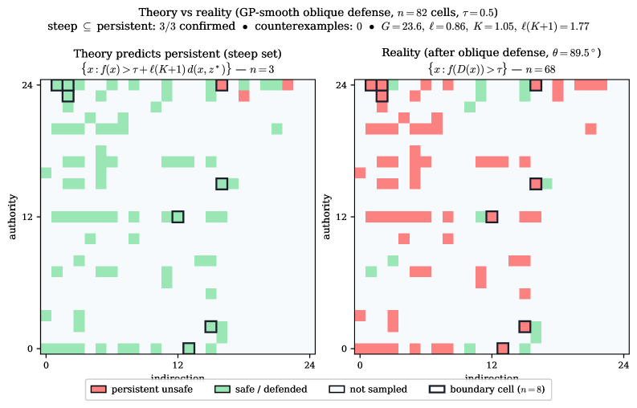

The prompt-injection defense trilemma is mechanically verified in Lean 4.
Abstract
We prove that no continuous, utility-preserving wrapper defense-a function $D: X\to X$ that preprocesses inputs before the model sees them-can make all outputs strictly safe for a language model with connected prompt space, and we characterize exactly where every such defense must fail. We establish three results under successively stronger hypotheses: boundary fixation-the defense must leave some threshold-level inputs unchanged; an $ε$-robust constraint-under Lipschitz regularity, a positive-measure band around fixed boundary points remains near-threshold; and a persistent unsafe region under a transversality condition, a positive-measure subset of inputs remains strictly unsafe. These constitute a defense trilemma: continuity, utility preservation, and completeness cannot coexist. We prove parallel discrete results requiring no topology, and extend to multi-turn interactions, stochastic defenses, and capacity-parity settings. The results do not preclude training-time alignment, architectural changes, or defenses that sacrifice utility. The full theory is mechanically verified in Lean 4 and validated empirically on three LLMs.
Problem
Wrapper defenses for language models (input classifiers, sanitization layers, rewriting pipelines) preprocess prompts before the model sees them. Whether such defenses can eliminate all prompt injection vulnerabilities is an open question.
Approach
The authors prove impossibility results under topological assumptions. They establish a defense trilemma: continuity, utility preservation, and completeness cannot coexist for any wrapper defense on a connected prompt space. Three results of increasing strength are proved: boundary fixation (some threshold inputs must remain unchanged), an epsilon-robust constraint (a positive-measure band near fixed points stays near-threshold under Lipschitz regularity), and a persistent unsafe region (under a transversality condition, a positive-measure subset remains strictly unsafe). The full theory is mechanically verified in Lean 4.

Figure 4: Non-vacuous validation of Theorem 6.3 on the saturated gpt-3.5-turbo-0125 grid ( 82 filled cells, \tau=0.5 ) under the GP-smooth oblique defense ( \theta=89.5^{\circ} , \ell=0.86 , K=1.05 ). Left: the steep set \mathcal{S}_{\text{steep}}=\{x:f(x)>\tau+\ell(K{+}1)\,d(x,z^{*})\} ; |\mathcal{S}_{\text{steep}}|=3 . Right: cells that actually remain unsafe after defense, \mathcal{S}_{\text{ac
Results
The defense trilemma is validated empirically on three LLMs. Parallel discrete results require no topology. Extensions cover multi-turn interactions, stochastic defenses, and capacity-parity settings. The results do not preclude training-time alignment or architectural changes.